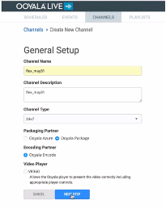
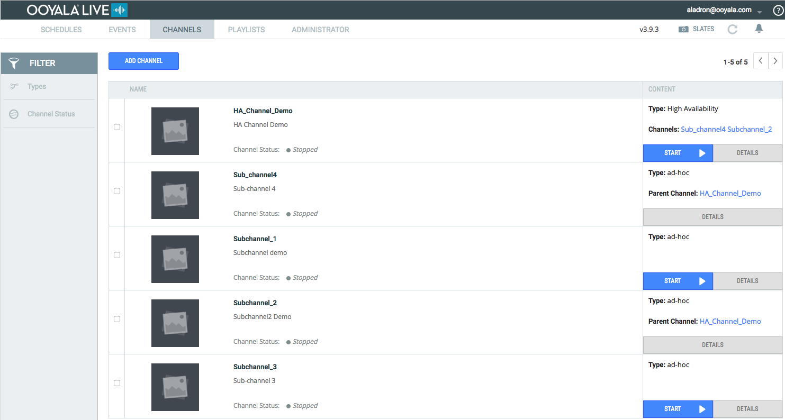
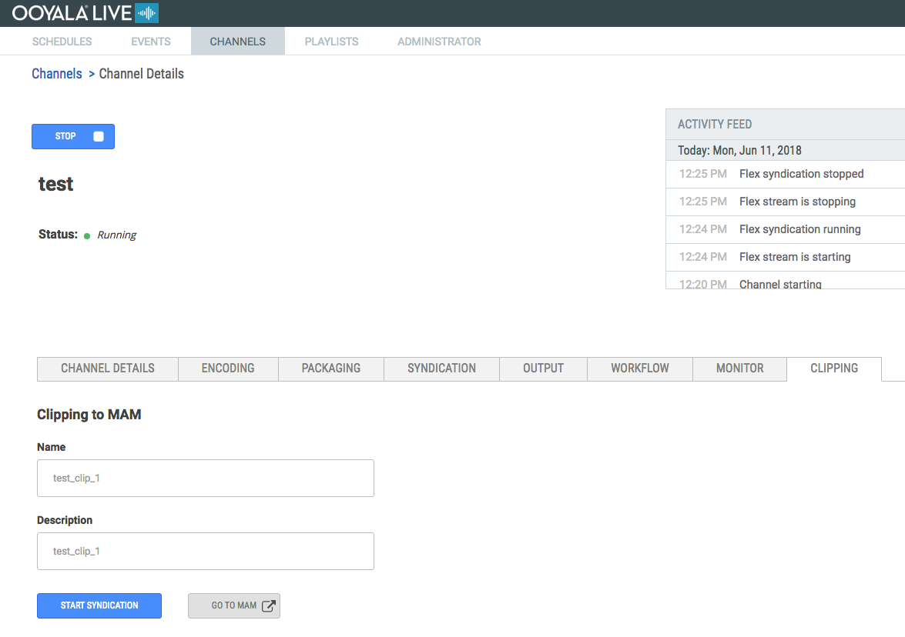
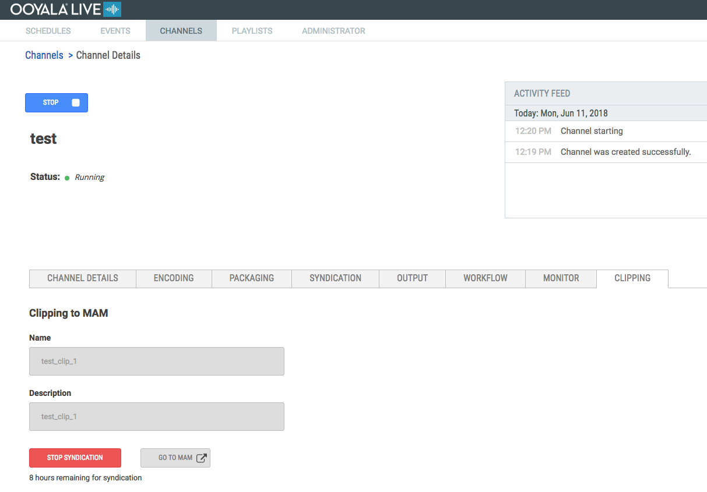
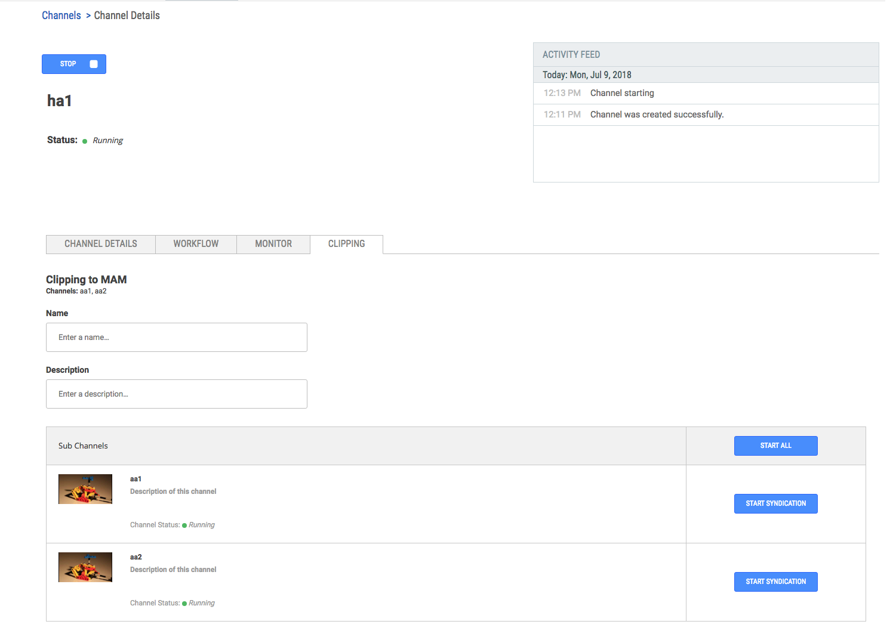
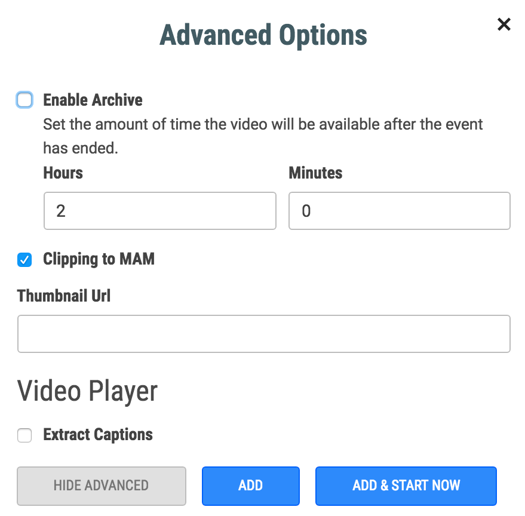
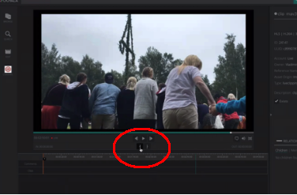
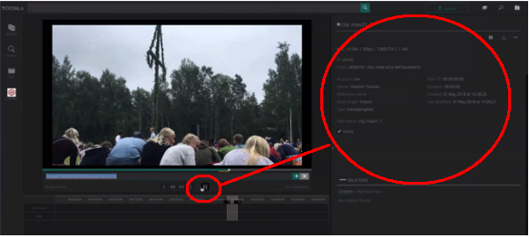
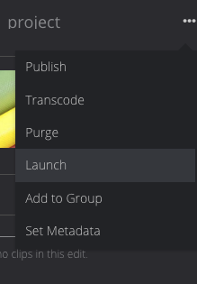
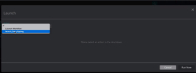

Ooyala Live Clipping is a new feature release to clip extracts from a Live video stream and
use them as independent video assets.
How to use this feature in Channels:
- In the OoyalaLive Platform, go to the CHANNELS tab and create a
new channel. Enter the desired encoding and packaging settings:

- Start the new channel.

- Click on the desired channel DETAILS tab.
- In the next window, click on the CLIPPING tab:

- Enter a name and a description.
- Click the Start Syndication button. A warning dialog is displayed
about a syndication 8-hour limit.
- Click the Start Syndication button in the warning dialog.
- When the process begins, a second button, GO TO MAM, is
displayed. Click this button:

HA Channels
High Availability (HA) channels differ slightly from the normal channels as HA doesn't have a corresponding clipping asset in Ooyala Flex. Instead, each subchannel of HA has it as a separate entity. Since clips are separate assets, it makes no difference which subchannel they were created from. For example, if a problem occurs during OoyalaLive streaming on the primary subchannel, the backup one can be used for clipping:

How to use this feature in Events:
- In Ooyala Live, click on the EVENTS tab.
- Add a new event. Enter your event information and click on Advanced
Options.
- Select the Clipping to MAM option.
- Click ADD or ADD & START NOW:
- In the EVENTS tab, select the event you just created and click Details.
- Select the Clipping tab.
- Click GO TO MAM, as before.
Note: Modifying S3 storage and Flex profiles does not break existing channels or events. However, if
you delete the profiles, the corresponding channels and events will not work, and will
need to be recreated.
Clipping in MAM
- Log in to MAM. In the MAM UI, you can see your video in the preview player.
- To create a clip, select the clip tool and select the time frame you want to clip:
- After selecting the desired time frame, click on the clip confirmation button and name
the clip: 
- Click on the plus button (+) at the right to save the new video clip as a logical
clip.
- You must still render the clip to create a video file. For this, go to the Assets
section in MAM. Locate your created clip under the CLIPS section and in the right-hand
menu, click on the three-dot button, and select Launch: 
- Select the option Launch from Clip and click Run Now:
This publishes the new clip content into MAM.
For more details on clipping in MAM, please see the MAM documentation in the help center.
Note: For more details about pre-requisites and other technical advice, please contact your
Ooyala representative.